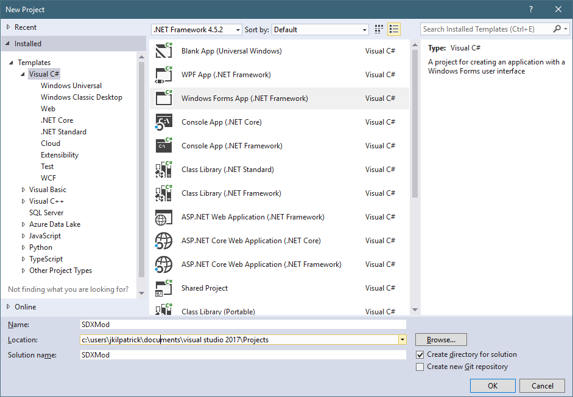

If you want to be able to use Visual Studio to make new mods, or make changes to the existing ones, you may follow this guide, after you finish installing Visual Studio 2017.
In Visual Studio 2017, create a new Project by clicking on the File menu, then New -> Project...
By default, Windows Forms App ( .NET Framework) will be the selected Project Type. If it's not, you may select it.
Note: The Project type is not critical here. We could just as easily as choose Console App (.NET Framework).

For the Name, choose something like SDXMod, and click on OK.
Created with the Personal Edition of HelpNDoc: News and information about help authoring tools and software